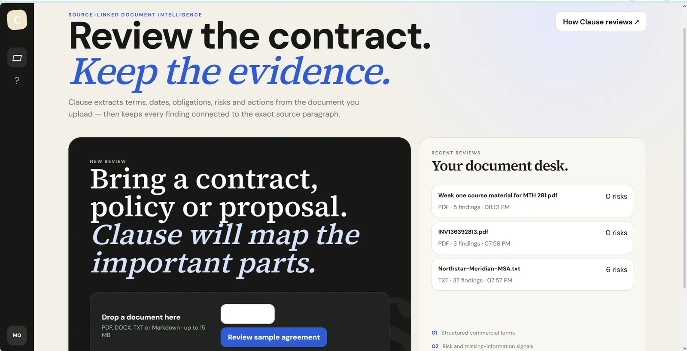
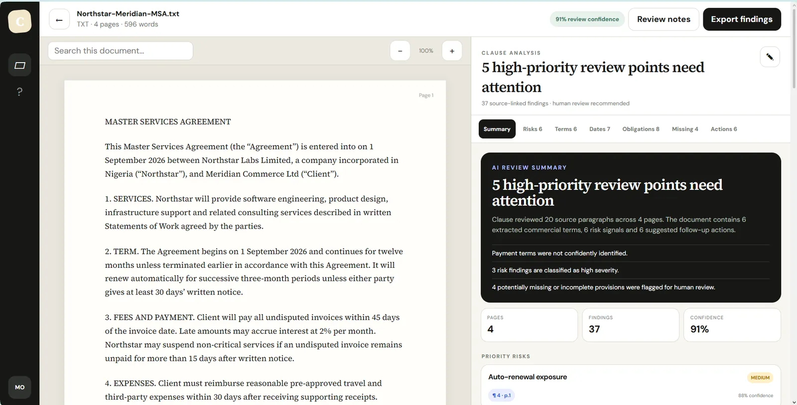
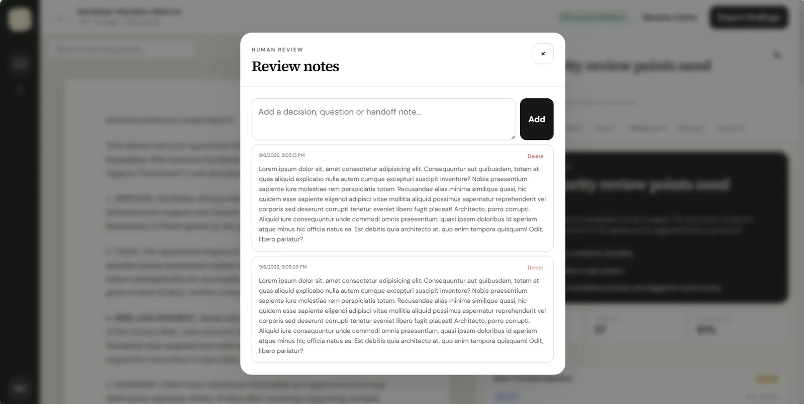
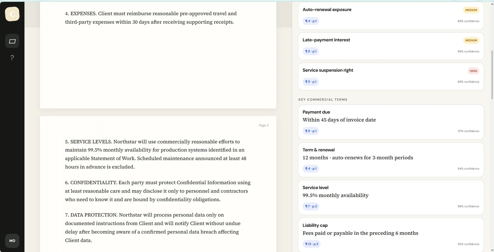

PARSE THE SOURCE
The document becomes structured input before findings are presented.


Document review becomes hard to trust when generated findings are separated from the source evidence that supports them.
Clause keeps the document visually dominant and links structured findings, risks and actions back to source paragraphs and pages.


This section reads the supplied artifacts as product evidence: what the interface has to keep understandable, connected or constrained.
The document becomes structured input before findings are presented.
Supported findings stay connected to the paragraph they came from.
The reviewer can inspect the source and the extracted interpretation in the same workspace.
The interface is structured around evidence rather than pretending every automated conclusion is absolute.
A compact contact sheet keeps the page readable; select any frame to inspect it at full size.